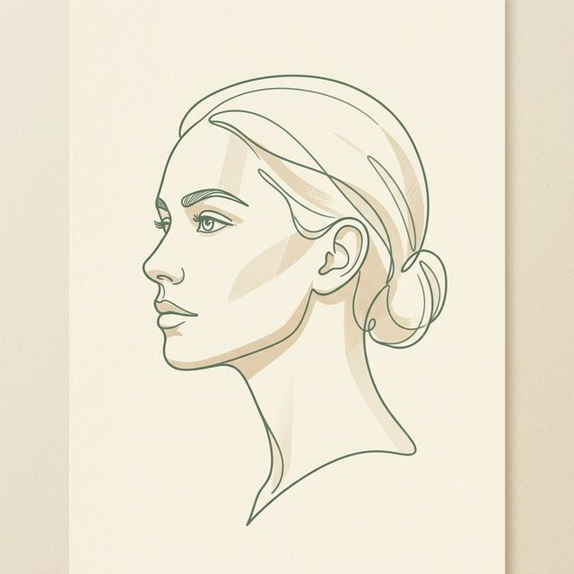
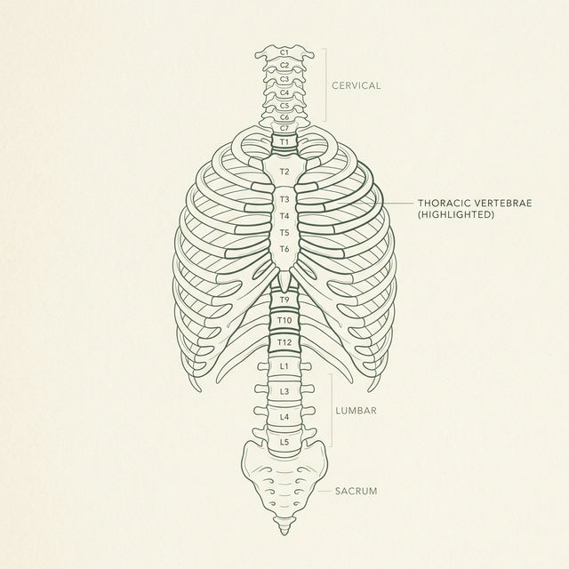
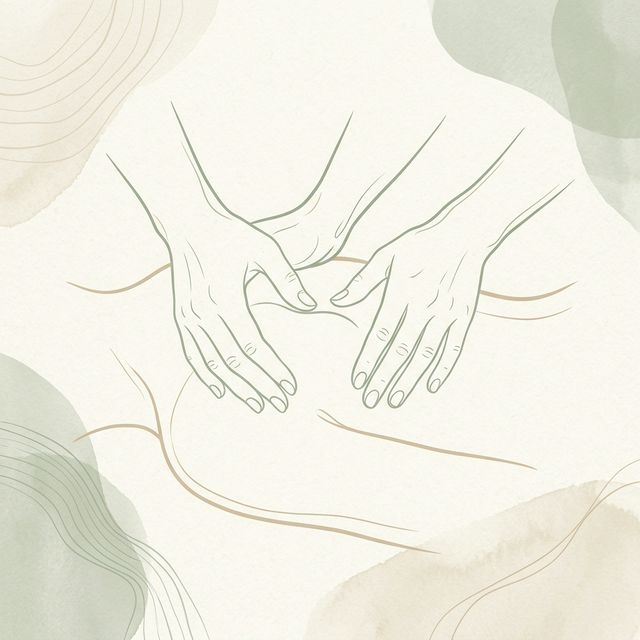
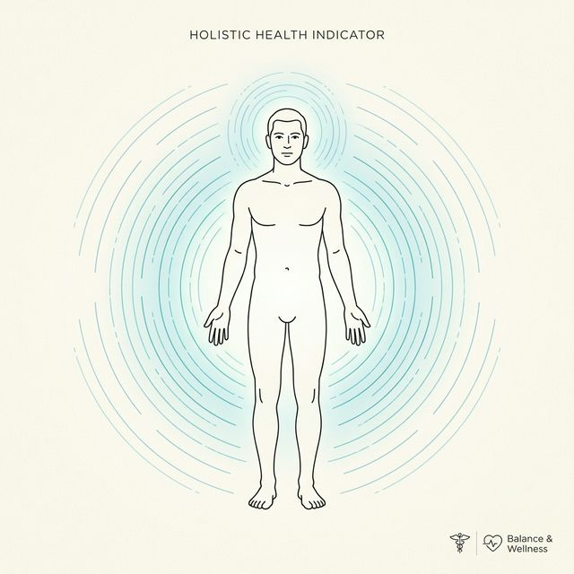

Vom Erstgespräch
zur Genesung.
Wir möchten, dass Sie sich bei uns gut aufgehoben fühlen. Unser Prozess ist darauf ausgelegt, nicht nur Symptome zu lindern, sondern die wirklichen Ursachen zu verstehen.
In 4 Phasen zur Einheit.
Hier erfahren Sie, wie wir gemeinsam an Ihrer Gesundheit arbeiten.




Anamnese
Wir blicken hinter die Oberfläche. Im Erstgespräch erfassen wir nicht nur Ihre aktuellen Symptome, sondern die gesamte Geschichte Ihres Körpers – von alten Verletzungen bis hin zu emotionalen Belastungen.
Struktur & Befund
Das Fundament Ihrer Gesundheit. Wir untersuchen die Wirbelsäule und das muskuloskelettale System auf Blockaden und Spannungen, die den freien Fluss Ihrer Energie behindern.
Manuelle Therapie
Die Heilung durch Berührung. Mit präzisen osteopathischen Techniken lösen wir Gewebespannungen und regen die Selbstheilungskräfte Ihrer Organe und Systeme an.
Ganzheitliche Kraft
Wiederherstellung der Balance. Unser Ziel ist es, dass Sie sich als Ganzes wieder lichtvoll und frei bewegen können – im Einklang mit Ihrem inneren Rhythmus.
Transparenz & Fairness
Ihre Investition
Eine Sitzung dauert ca. 60 Minuten.
- Erstgespräch 95,00 €
- Folgetermin 95,00 €
Abrechnung nach GebüH (Heilpraktiker).
Ihre Erstattung
Osteopathie wird von vielen Kassen bezuschusst.
So einfach geht's:
Harmonie im Detail
Dauer der Behandlung
Im Durchschnitt planen wir für jede Behandlung etwa 55-60 Minuten ein, um Körper und Geist ausreichend Raum zu geben.
verstehenFrequenz & Kontinuität
Oft tritt nach 2-3 Terminen eine deutliche Besserung ein. Akute Fälle benötigen meist weniger Zeit als chronische Muster.
verstehenWohlbefinden
Die Untersuchung erfolgt meist in bequemer Unterwäsche. Bringen Sie gerne ein großes Handtuch mit.
verstehenBürokratie & Erstattung
Für gesetzlich Versicherte verlangen viele Kassen eine ärztliche Empfehlung (Privatrezept), um die Kosten zu erstatten.
verstehen